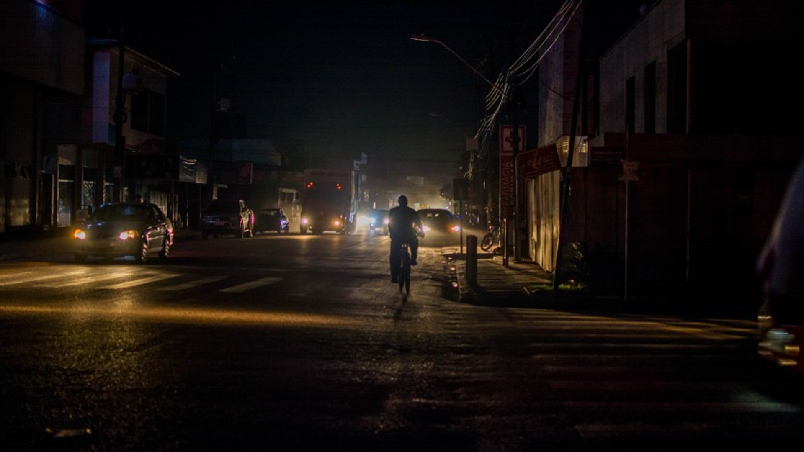

São pessoas que buscam a autossuficiência sob diversas perspectivas e para isso realizam treinamentos físicos ou psicologicos e adquirem equipamentos que podem ser essenciais à manutenção da vida, como por exemplo, kit de primeiros socorros, arma para defesa pessoal e ainda mantém estoques de água e alimentos.

https://blogdescalada.com/wp-content/uploads/2017/11/curso-sobrevivencia-1.jpg
No Brasil os principais aspectos que levam o cidadão a se tornar um sobrevivencialista são os receios por fatores como a ruptura da ordem social, crises econômicas, desastres naturais ou causados pelo homem, a violência urbana, crises de abastecimento. Uma das prerrogativas do sobrevivencialismo é a preparação prévia para lidar com estes incidentes, antecipando ou atenuando os efeitos primários ou secundários da ameaça, um bom exemplo desta preparação é ter uma lanterna a postos para enfrentar um blackout, um extintor de incêndio e uma outra diversidade de itens e conhecimentos aplicáveis em situações de dificuldade.

https://www.cnnbrasil.com.br/wp-content/uploads/sites/12/2021/06/19117_3CF1CCFBD13CAF2E-8.jpg?w=864&h=484&crop=1